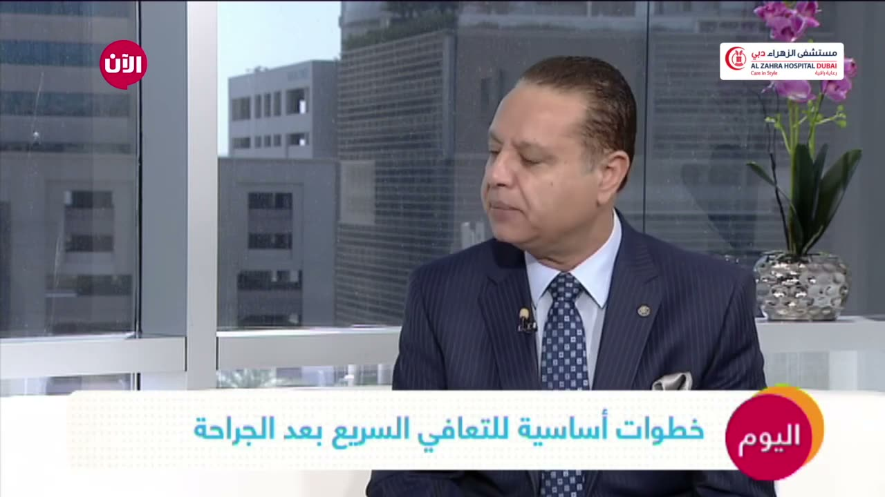

Dear Colleagues,
After practicing in the United Kingdom for many years, I moved back to the Middle East. What I found was that there was significant variability in clinical practice causing inconsistency in patient outcomes. Having seen the improved outcomes that resulted from the implementation of ERAS in the UK and other countries throughout the world, I was convinced that ERAS protocols were the best platform for improving the quality of peri-operative care, with significant benefits to both the patient and the institution.
I therefore founded the Pan African & Middle East Enhanced Recovery After Surgery (PAME ERAS) Society with the aim of creating awareness about ERAS in the Middle East, as well as educating clinical practitioners about its implementation. Our first PAME ERAS meeting was held in Dubai in February 2015 and was a pivotal milestone for the mission of our society.
You are cordially invited to join our PAME ERAS Society, participate in our upcoming events, and contact us for help in implementation of the ERAS protocols.
